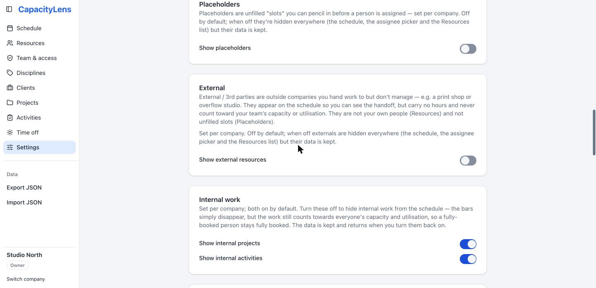
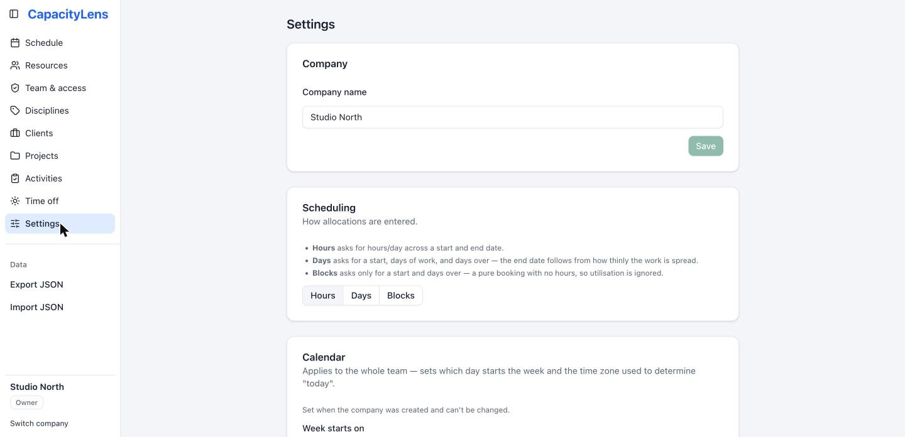

Simple by default.
Scalable by design.
CapacityLens is a helicopter view of your agency's capacity: who's working on what, who's free, and when. Out of the box it does exactly that and nothing else — every extra capability is a switch you flip when your team actually needs it, and the plumbing to grow (roles, SSO, multi-company) is already underneath.
What it does, always
No modules to enable, no setup wizard. Create people and projects, drag out allocations, and the answers appear.
The Schedule
One screen, zoomable from 1 to 8 weeks. Drag to allocate, mark work tentative, confirmed or completed, and switch the same canvas into time-off drawing mode. Full undo/redo.
Utilisation at a glance
Live percentages per person, per discipline, and for the whole team. Over-capacity days flag themselves in red — no report to run.
People, not logins
Schedule permanent staff, freelancers and contractors without creating accounts for them. App access and being-on-the-schedule are deliberately separate.
Clients → Projects → Activities
A three-level shape that matches how agencies actually book work, with a built-in "Internal" client for the non-billable stuff.
Time off
Holiday, sick, unpaid and other — drawn straight onto the schedule so capacity is always honest. Notes on time off are private to Admins and Owners.
Your data, portable
Full JSON export and import from the sidebar. Nightly SQLite backups in the Docker setup. No export ransom, ever.
Search & filters
Filter the schedule by person, discipline, client, project or activity; hide tentative work for a committed-only view.
Light & dark
Both themes, or follow the OS. Accessibility is tested in CI (axe), not bolted on.

Off by default, on when you need it
Most tools ship everything on and make you prune. CapacityLens ships the minimum and lets you grow into the rest — each toggle lives in Settings with a plain-language explanation of what it changes. Turning something off never deletes data; it comes back when you flip the switch.
| Capability | Default | What flipping it does |
|---|---|---|
| Placeholders | Off | Unfilled "slots" you can pencil into the schedule before a person is hired or assigned. |
| External resources | Off | Print shops, overflow studios — companies you hand work to. Visible on the schedule, but they carry no hours and never count toward your team's capacity. |
| Authentication | Off | The login wall itself. Open access on a trusted network by default; password auth or SSO when you want real accounts. (The five-minute setup.) |
| Multiple companies | Off | One company per instance until you set CAPACITYLENS_MULTI_ACCOUNT=1. No accidental multi-tenancy. |
| Open signup | Off | Closed the moment the Owner exists — joining is invite-only unless you deliberately reopen it. |
| MFA (TOTP) | Off | One env var (SMALLSASS_ACCOUNT_REQUIRE_MFA=1) requires authenticator codes for every password login. |
| Offline access | Off | A seven-day, view-only device snapshot for train-journey schedule checks. Never queues edits. |
| Demo data | Off | A fresh install is empty; CAPACITYLENS_SEED_DEMO=1 seeds the two-company sample agency for evaluation. |
| Disciplines | On | Grouping people by craft (Design, Development…). On because most agencies think this way — one toggle hides it everywhere if yours doesn't. |
| Audit log | On | Every change recorded, on by default and refusing to be disabled in production. The one thing you shouldn't be able to forget. |
| Stale-write protection | On | Two people editing the same thing? The second save is challenged instead of silently overwriting. Opt-out, not opt-in. |
Notice the pattern: convenience features default off; safety features default on. The two deliberate exceptions to "off by default" are the audit log and stale-write protection — because you'd only discover you needed them after the incident.

Settings that stay out of your way
The Settings page is one scrollable list of cards — no tabs, no admin console. A few worth knowing about:
- Scheduling mode — enter work as Hours (the default), Days, or pure Blocks with no hours at all. Pick the precision your agency actually plans at.
- Calendar — week start, timezone and language are set once at company creation and then frozen, so "today" and "this week" mean the same thing for everyone, forever.
- Internal work visibility — hide internal bars for a client-work-only view; hidden work still counts toward capacity, so a fully-booked person stays fully booked.
- Per-device preferences — minimise weekends, snap to week start, allocation-bar labels and theme are yours alone; they never change what teammates see.

The same product at every size
You never migrate to a "bigger edition" — you flip the next switch when you get there.
-
Just you, evaluating
One command, in-memory demo, nothing installed beyond the repo. (Setup guide.)
-
Your team, trusted network
Real SQLite persistence, no logins. Docker Compose or bare Node behind your VPN. Backups on by default.
-
Real accounts
Four lines of .env turn on password auth: one Owner, invite links, four nested roles (Viewer → Editor → Admin → Owner) enforced server-side with field-level redaction — Viewers never see private names or time-off notes, exports are redacted per role.
-
Company-grade identity
Strict OIDC single sign-on against your identity provider, optional required MFA, deployment profiles that refuse unsafe combinations (the hosted profile, for instance, won't allow password logins at all).
-
More than one company
One env var away. Each company is fully isolated — memberships, roles and data are checked per-company on every request, not filtered in the UI.
What it will never do
The fastest way to stay simple is to refuse the right features. CapacityLens is deliberately not a budgeting or billing system, a timesheet, an hour-by-hour calendar, a project-management suite, a CRM, or a mobile-first app. Those boundaries are written into the README, not just the roadmap — if you need those tools, CapacityLens will sit happily beside them and stick to the one question it answers best: who's busy, who's free, and when.
Going deeper
Setup & first-run guide (illustrated walkthrough) · self-hosting.md (Docker, env vars, backups) · authentication.md (auth modes and profiles) · onboarding-and-access.md (the full role matrix) · privacy.md (what's stored where).